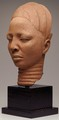

|  |
Nigeria, Ife (Yoruba) |
These splendid portrait sculptures were created to honor and commemorate the lives of Ife's kings, queens, and other people of elite status. They were most likely placed on altars within the palace complex and used in religious ceremonies. The altar was probably located in a courtyard used as a ritual area. It was surrounded by a pavement made of small, circular potsherds laid on edge and quartz pebbles arranged in elaborate patterns.
More recently (at the beginning of the twentieth century), sculptured heads were repeatedly buried in the ground at the foot of giant trees. They were dug up when needed for rituals, and afterwards reburied. Considered too precious to be left out in the open, these heads were reburied at the foot of a tree that marked the spot where the ceremonies in which they were used took place.6
Notes
6. Eyo and Willett, Treasures of Ancient Nigeria, pp. 11, 13.

Key ideas.
Where does it come from?
What does it look like?
How was it used?
How was it made?
Discussion questions.
Additional resources.
Select another piece.